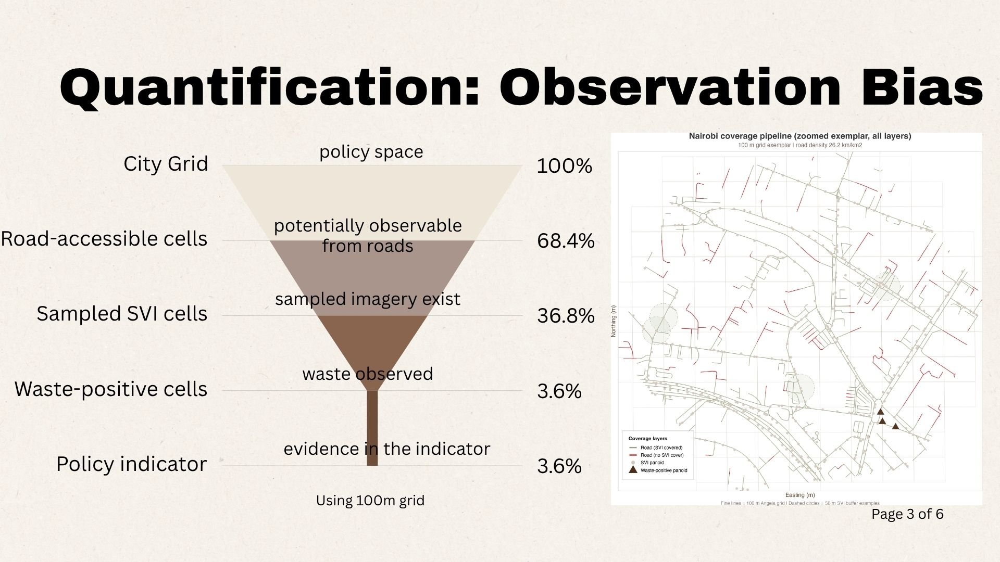
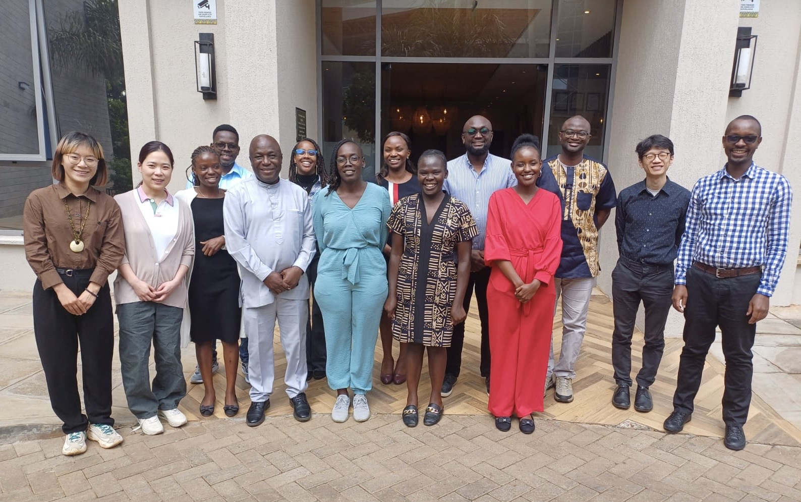

Presentation
Filter by theme
 2026
2026
ICSC 2026
ICSC 2026
Date: September 3, 2026
Location: Nuffield College, University of Oxford, Oxford, UK
Session: Digital and Computational Demography
Title: Who is Missing? Deprivation and Coverage Gaps in Meta's Crisis Population Data
Authors: Wenlan Zhang, Prof. Chen Zhong, Dr. Yanbo Pang
View Presentation
Programme
Conference

2026
DEBIAS 2026
DEBIAS Workshop and Symposium
Date: July 8, 2026
Location: University of Liverpool, Liverpool, UK
Title: From Street View to Waste Indicators: Where Does Data Bias Enter?
Authors: Wenlan Zhang, Prof. Chen Zhong
View Presentation
Workshop

2026
Waste at Margins
Waste at Margins Workshop
Date: June 4, 2026
Location: Nairobi, Kenya
Title: Accumulated Waste Piles Mapping with ML
Authors: Wenlan Zhang, Prof. Chen Zhong
With: APHRC, KDI, UN-Habitat, Community Mappers, and UCL
View Presentation
 2025
2025
IDRC 2025
IDRC 2025
Date: October 22–24, 2025
Location: CYENS Centre of Excellence, Nicosia, Cyprus
Title: Is Waste Blocking Our Cities? A Multisource Approach to Understanding Flood Disruption in Nairobi
Authors: Wenlan Zhang, Prof. Chen Zhong
View Presentation
Conference
 2025
2025
Netmob 2025
Netmob 2025
Date: October 8–10, 2025
Location: Paris, France
Title: Decomposing International Migration Flows with Mobile Trace Data: Trends, Seasonality, and Shocks
Authors: Wenlan Zhang, Dr Douglas R. Leasure
Data Challenge: Integrating Temporal Context into User Profiling: A Preliminary Study with Doc2Vec
Authors: Wenlan Zhang, Adam (ZhengZi) Zhou, Andrew Renninger
View Poster
Abstract
Conference
 2025
2025
City+ 2025
City Plus 2025
Date: September 29–30, 2025
Location: Oxford, UK
Title: Mapineq Workshop
Workshop Team: Dr. Douglas Leasure, Wenlan Zhang, Xiang Ao
View Tutorial
Summary
Conference
 2025
2025
IC2S2 2025
IC2S2 2025
Date: July 21–24, 2025
Location: Norrköping, Sweden
Title: AI for Spatial Justice: Multimodal and Street View Imagery Uncover Waste Disparities in Nairobi's Informal Settlements
Authors: Wenlan Zhang, Prof. Chen Zhong, Prof. Qunshan Zhao
View Poster
Abstract
Conference
 2024
2024
Netmob 2024
Netmob 2024
Date: October 7–9, 2024
Location: Washington DC, US
Title: Unveiling Urban Travel Patterns: A Comparative Analysis of Smart Card and Mobile App Data
Authors: Dr. Sveta Milusheva, Wenlan Zhang
View Presentation
Abstract
Conference
 2024
2024
AAG 2024
AAG 2024
Date: April 16–20, 2024
Location: Honolulu, Hawai'i, US
Title: A Data-Driven Approach for Identifying Open Dumping Sites in the Global South
Authors: Wenlan Zhang, Dr. Angela Abascal, Dr. Chen Zhong, Dr. Qunshan Zhao
View Presentation
Abstract
Conference
 2023
2023
GIScience 2023
GIScience 2023
Date: September 12–15, 2023
Location: Leeds, UK
Title: Digital Injustice: A Case Study of Land Use Classification using Multi-source Data in Nairobi, Kenya
Authors: Wenlan Zhang, Dr. Chen Zhong, Dr. Faith Taylor
View Presentation
Read Short Paper
Conference